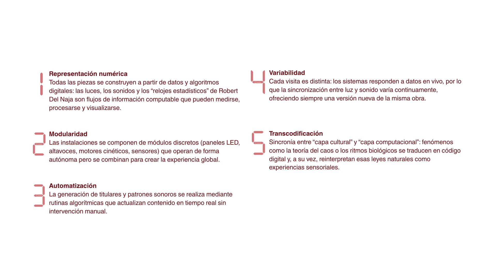
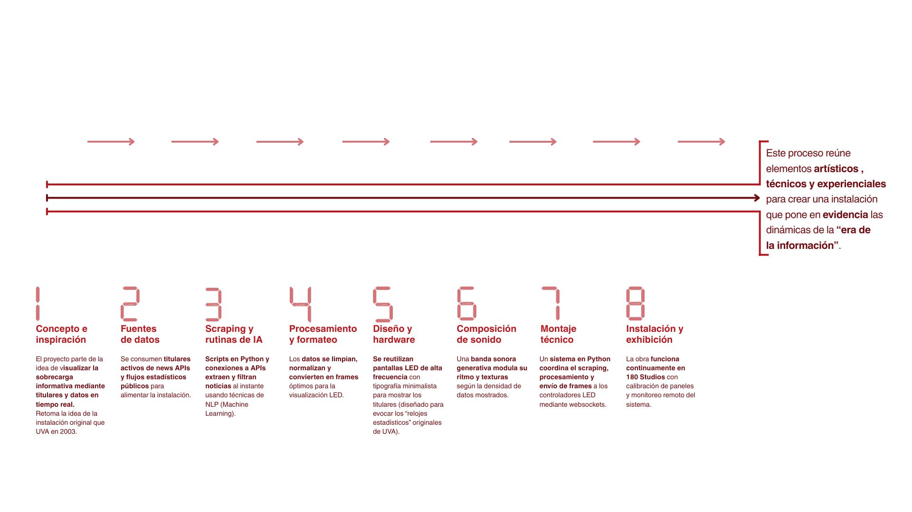

Synchronicity
Synchronicity es una exhibición de arte inmersiva creada por el colectivo United Visual Artists (UVA), el cual es un estudio con un enfoque interdisciplinar que combina arte, tecnología y diseño para “convertir el espacio en instrumento” mediante luz, sonido y código..
Synchronicity, en los espacios subterráneos de 180 Studios, aprovechó los túneles, bóvedas y conductos para generar una experiencia inmersiva que juega con la percepción del tiempo y la causalidad. Se desarrolló entre el 12 de octubre de 2023 y el 17 de marzo de 2024, presentando ocho instalaciones de gran escala que mezclan estética cinética, sonido generativo y visuales dinámicos United Visual Artists. El título alude al concepto de “coincidencias significativas”: fenómenos que parecen conectados sin una relación causal directa, un hilo conductor en el que UVA explora la elasticidad del tiempo, las relaciones entre color y frecuencia sonora o la precisión matemática de órbitas y patrones caóticos.Dentro de sus ocho obras, se encuentra Present Shock II, la cual confronta al público mostrando titulares de noticias en vivo y datos estadísticos en tiempo real, todo mostrado en pantallas LED de alta frecuencia, con el objetivo de crear una sensación de “sobrecarga informativa” que desafía nuestra percepción del tiempo y la realidad..
Equipo
Principios de Nueva ley de Manovich
Obras
Obra: Present Shock II.
